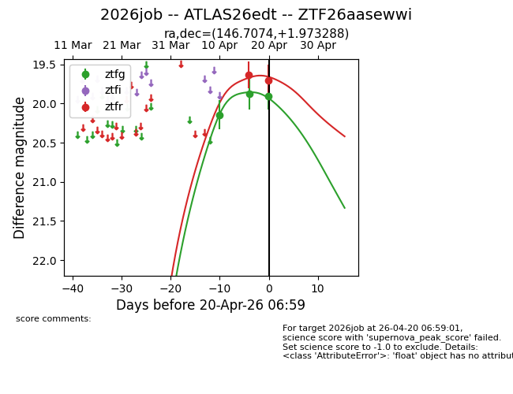
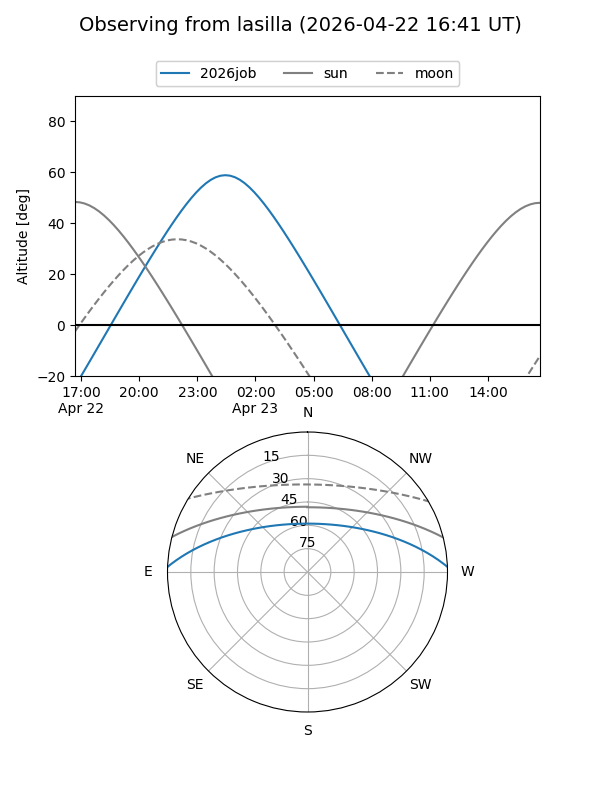
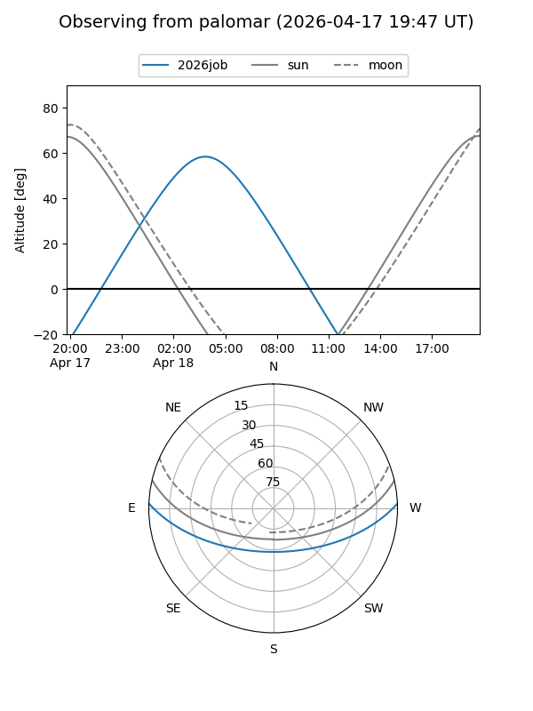
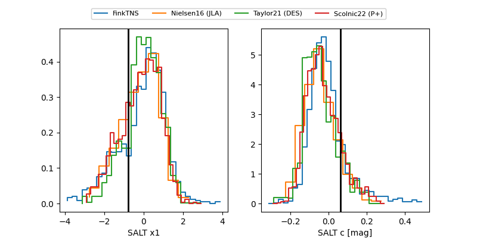

2026job
Target 2026job at 2026-04-20 07:10
Aliases and brokers:
FINK: link
Lasair: link
ALeRCE: link
TNS: link
YSE: link
alt names
ZTF26aasewwi (ztf,fink_ztf)
2026job (tns,yse)
ATLAS26edt (atlas)
Coordinates:
equatorial (ra, dec) = 146.7074,+1.97329
equatorial (HMS+DMS) = 09:46:49.78,+01:58:23.84
galactic (l, b) = (234.5101,+39.18838)
Flags:
Photometry:
last ztfg=19.91, ztfr=19.70
3 ztfg, 2 ztfr detections
Lightcurve

Visibility


Additional plots
